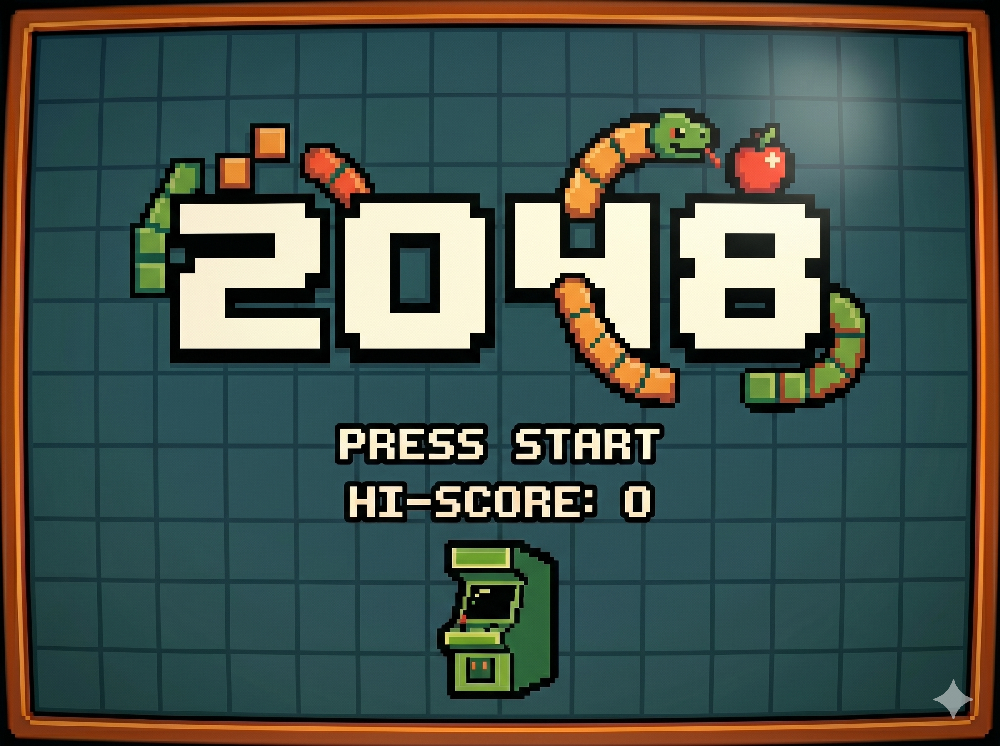
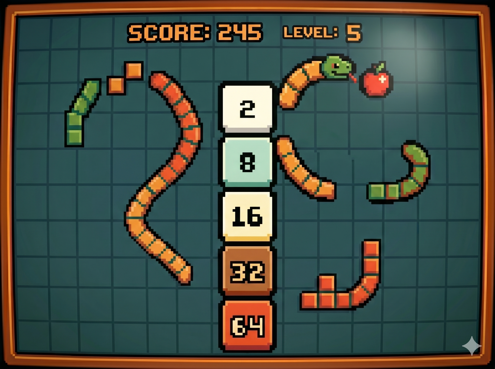

Es el juego más moderno de la lista, creado en 2014 por el desarrollador italiano Gabriele Cirulli. Lo programó en un solo fin de semana como un ejercicio de código abierto.
Se juega en una cuadrícula de 4x4. El objetivo es deslizar baldosas numeradas para que, al chocar dos con el mismo valor, se sumen, hasta alcanzar la cifra de 2048.
Nivel: Medio/Alto. La dificultad aumenta de forma orgánica: cuantas más fusiones realizas, más baldosas de alto valor bloquean el tablero, reduciendo los huecos libres para que aparezcan nuevas fichas.
Se basa en el procesamiento de arrays. Cada movimiento activa una función que "empuja" los valores, suma los iguales y genera un nuevo '2' o '4' en una posición aleatoria vacía.